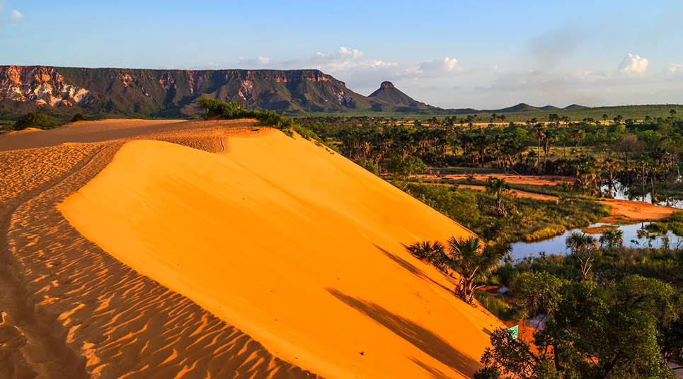
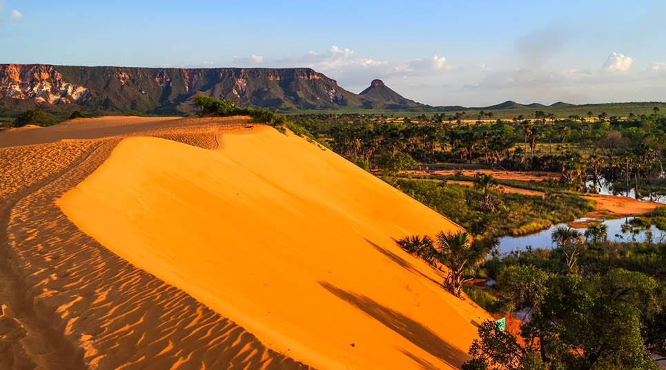

O Jalapão é um região encantadora localizada no estado do Tocantins, Brasil. Conhecido por suas belezas naturais, o jalapão é um
destino imperdível para os amantes da natureza e da aventura.
 

Algumas das atrações mais populares do Jalapão incluem a cachoeira da velha, a pedra furada e o fervedouro, uma nascente com águas tão cristalinas que você flutua sem esforço.
| Atividade | Duração | Nivel de Dificuldade |
|---|---|---|
| Trilha até a Cachoeira da velha | 4 horas | Moderado |
| Rafting no Rio Novo | 1 dia | Alto |
| Passeio de 4x4 pelas Dunas | Meio dia | Fácil |